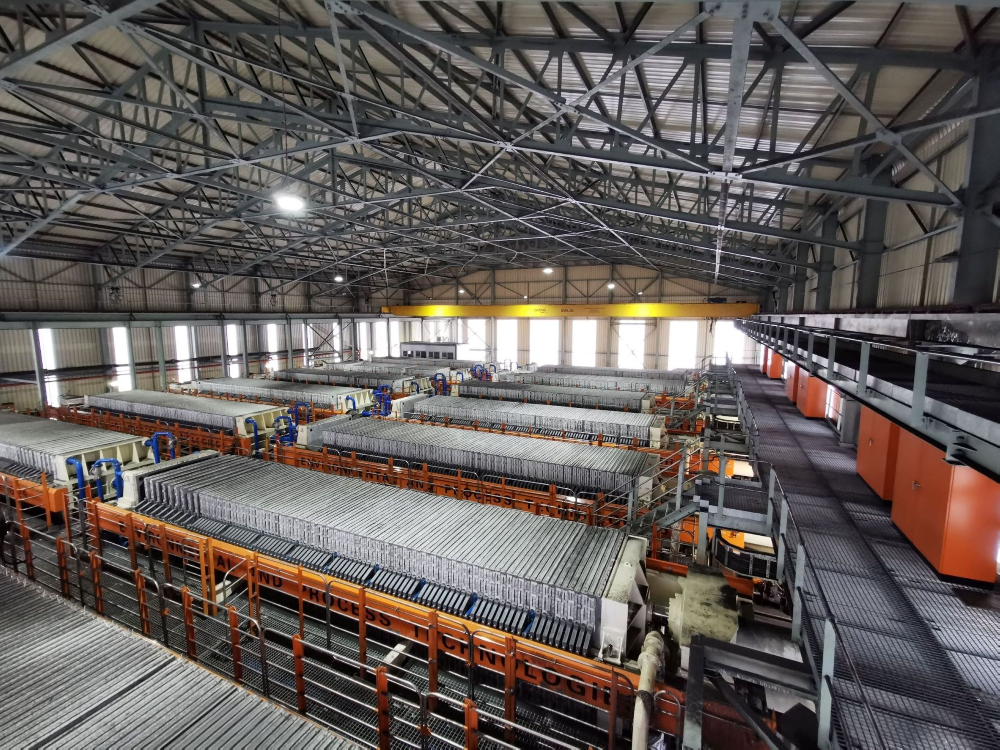

Solutions
Solid Liquid Separation
The separation of solids and liquids provides the basis of resolving the hazards of slimes dams. Solid liquid separation
does pose challenges particularly for fine and ultrafine particulate matter suspended in liquid. In a competitive market
it is critical to keep operation costs as low as possible while still maintaining the safety and integrity of the communities
and environments surrounding the mining site.
Historical solid liquid separation options such as belt filters, Drum filters, thickeners, disk filters, pan filters, and
centrifuges unfortunately together with their high operational cost and foot space, none of these can handle the large
quantities of slurry effluent produced by the processing mills nor are they able to produce a sufficiently dry product that
can be safely stockpiled or stored with out additional costs.
Filter Presses
The solution is one that is both new and old being used in the Shang Dynasty in 1600B.C. This solution works across all mining mill tailings, paper mills and even sewage. The working principle of filter presses is that slurry is pumped into the machine such that solids are distributed evenly during the fill cycle. Solids build up on the filter cloth, forming the filter cake; the filtrate exits the filter plates through the corner ports into the manifold, yielding clean filtered water. Filter presses are a pressure filtration method and as such, as the filter press feed pump builds pressure, solids build within the chambers until they are completely chock-full of solids, forming the cake. Once the chambers are full, the cycle is complete, and the filter cakes are ready to be released. In many higher capacity filter presses, fast action automatic plate shifters are employed, speeding cycle time. Filter presses have a simple operation procedure which can be fully automatized, they also have the lowest capital and operational expense requirements of all filtration systems and even slurry dams.
Resolution
Plate and frame filters provide the options of further beneficiation of valuable ores and minerals from the previous waste stream increasing product yield and profit. Filtrate from the filtration can be recycled back into the processing mill significantly reducing the raw water requirement and preserving natural water sources. The solids form dense and stable filter cakes with low moisture content which are easily stackable and movable allowing for backfilling of previously mined sections reducing the costs of rehabilitation. With governments being pressured to impose stricter regulations with regards to waste management of mining mills the choice is clear: plate and frame filtration will not only reduce the impact of mining on the communities and environments surrounding them they will also produce profit for the mining companies.